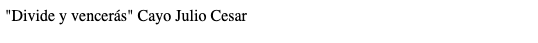

La Importancia de la Estructura
Para empezar en este fascinante mundo del desarrollo web, primero se debe entender la importancia que tiene la estructura. Para empezar, tomemos por ejemplo este bonito artículo el cual está estructurado (bien estructurado quiero pensar), existe un título, que cumple la función de resumir en pocas palabras de lo que se trata el artículo o captar la retención del incauto lector, también existen subtítulos cuya función es darle a conocer al respetable, de qué tema se va a tratar en los siguientes párrafos, los cuales guardan la información la cual el lector buenamente vino a adquirir, ya que los Sapiens somos animales muy visuales, también he adjuntado algunas imágenes para explicar de mejor manera algunos conceptos, o simplemente para que el artículo se vea mejor. Esta estructura ayuda al lector a que pueda tener una buena (la mejor, quiero pensar) experiencia al leer el presente artículo.
Daráse cuenta el lector que leer el artículo sin ninguna estructura es, parafraseando los halagos de mi ex a un humilde servidor, difícil, monótono, aburrido, y el lector tendrá toda la razón. Ahora al igual que el ojo humano prefiere la estructura antes que la anarquía (política aparte), los navegadores web hacen otro tanto. Nosotros podríamos desarrollar una página web sin estructura alguna, el inconveniente? Los navegadores (Chrome, Mozilla, Safari, por nombrar algunos) no entenderían muy bien lo que pretendemos, y peor aún los usuarios tampoco, y estos últimos se pueden contrariar y mandarle saludos a nuestra madre.
Y Qué Tiene Que Ver La Estructura Con La Navidad
Pues, HTML o HyperText Markup Language, (con eso gasté todo el inglés que tenía) o para los que no dominamos muy bien el idioma anglo-sajón, lenguaje de marcado de hipertexto, es el lenguaje que le va a dar estructura a nuestras aplicaciones web, con bonitas etiquetas, le indicará al navegador de turno, cual es el título, subtítulo, párrafo, imagen, etc etc.
Ahora ejemplefiquemos, sin conocer la sintaxis de etiquetas quiero escribir una frase de algún personaje famoso en la historia, que sea vista por todos los que navegan por la web (y claro tienen a bien visitar mi sitio), el personaje será Cayo Julio Cesar (aunque no lo crean, Cayo éra su nombre y Julio Cesar sus apellidos) la frase, “Divide y vencerás”, una frase corta que le sirvió de mucho a Cortez para conquistar a los Mexicas, la cual encomendó a Pizarro que este se encaminara hacia los andes. Abro mi editor de texto escribo mi frase, y le doy el formato deseado
Lo que el navegador muestra:
Qué es lo que estoy haciendo mal Dios mio?
Ya pero … etiquetas?
Pues si, HTML consta de diferentes elementos para diferentes usos, un elemento html se forma con una etiqueta de apertura y otra de cierre, el texto que el desarrollador quiera presentar se envuelve en estos elementos, así le damos estructura al contenido. Pero veamos como es una etiqueta
El elemento párrafo, se utiliza para estructurar párrafos, y su sintaxis consiste en un signo menor que “<” seguido por el nombre del elemento “p”, para terminar con el signo de mayor que “>”, y para cerrar el elemento solo se agrega una barra invertida “/” justo después del signo menor que “<”.
Ahora no todos los elementos HTML cuentan con etiquetas de cierre, algunos se cierran solos como el elemento
, que sirve para hacer un salto de linea, este elemento no necesita contenido, por lo tanto no necesita una etiqueta de cierre
Otro elemento que no necesita un cierre es "hr", el cual sirve para dibujar en el navegador líneas horizontales.
Ahora, para hacer que el navegador presente nuestro contenido como nosotros pretendemos que lo muestre, debemos de envolver a este en estos elementos HTML con etiquetas, además voy a agregarlo un par de líneas horizontales para que se vea mejor
Navegador:
Va quedando, pero necesito que el texto “Cayo Julio Cesar” se posicione en el lado derecho.
La importancia de los Atributos
Un atributo le dá más información al navegador, como que un link nos lleve a una URL específica, o en nuestro caso, posicionar un elemento a la derecha de la pantalla. Agregar atributos a elementos HTML se hace de la siguiente manera, después del nombre del elemento, “
Navegador:
Conclusión
Como hemos podido aprender, la estructura y los elementos HTML son clave para que los navegadores interpreten de manera correcta nuestras indicaciones al presentar un documento a los usuarios, tanto en la escritura de un artículo, como en el desarrollo de aplicaciones web, en los siguientes artículos aprenderemos sobre la funcionalidad de los elementos HTML más importantes, gracias por su atención